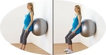
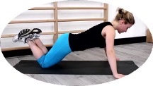
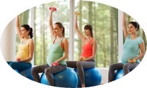
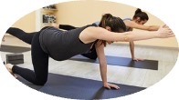

Introduction
Finally, the phase where the ongoing wait isn’t going to get over, brings to you the third trimester.Here comes to the moms who encounter their unusual self in these three months.You may here experience radiant body heat, increased urinary frequency returns, variations in blood pressure, swelling in ankles, leg cramps etc.On this end believe it or not you will reach to your little one surpassing them all.
NUTRITION
FOLIC ACID
In the first phase of pregnancy, prenatal nutrition is general. Vitamin b9 or folic acid plays a vital role in preventing tube defects . you can have folic acid enriched foods like oranges, strawberries , green vegetables , kidney beans etc
-----------------------------------------------------------------------------------------------------------------------------------------------------------------------------------------------------------------------------------------------------------------------
PROTEINS
Muscle development is essential during pregnancy . and this is done through protein-rich food likeeggs, yogurt, chicken ,etc . you must have at least 75 grams of proteins per day for you and your baby’s good muscle development.
-----------------------------------------------------------------------------------------------------------------------------------------------------------------------------------------------------------------------------------------------------------------------
CALCIUM
In order to develop teeth and bones, the baby takes in Calcium from your bones. I f your calcium intake is less , then it can lead to brittle bones. The pregnancy diet plan for the first trimester includes around 1,000 milligrams of Calcium per day. You must have milk, cheese, dark green, vegetables, et.,for etter bone health.
-----------------------------------------------------------------------------------------------------------------------------------------------------------------------------------------------------------------------------------------------------------------------
IRON
Iron is very because the blood supply in the body ramps up to meet the needs of your baby.The iron requirement is 27 milligrams for a pregnant women. like beef, chicken, eggs , tofu and spinach are rich in iron. So, make sure that you are getting this solid dose of iron with these foods.
-----------------------------------------------------------------------------------------------------------------------------------------------------------------------------------------------------------------------------------------------------------------------
VITAMIN C
Foods like oranges, broccoli and strawberries are rich sources of Vitamin C. They help in promoting tissue and bone development in the body. Pregnant women must aim to have 85 milligrams of Viamin C during this phase.
-----------------------------------------------------------------------------------------------------------------------------------------------------------------------------------------------------------------------------------------------------------------------
DHA
DHA is an omega-3 fatty acid that is found in low-mercury fish. If you feel nauseous of seafood, make sure that DHA in your diet is included in any other way through different foods.
-----------------------------------------------------------------------------------------------------------------------------------------------------------------------------------------------------------------------------------------------------------------------
POTASSIUM
Sodium along with potassium helps your body in maintaining a fluid balance and regulating blood pressure. Around 2900 milligrams of Potassium is required by the body during the pregnancy phase. Make sure you include dry fruits , bananas , avocado , spinach, broccoli, etc., in your diet.Follow the first trimester meal plan to know the exact amount of nutrients that you need for your baby’s growth. But also, remember the foods to avoid during the 1st trimester. Since all the nutrients will be taken from your body to help the baby grow, you must also take care of yourself. Eat foods rich in proteins ,calcium,etc.,and drink juices that are made from ayurvedic ingredients . this will help in making your bones and muscles strong. And this will definitely result in the baby’s healthy development.
-----------------------------------------------------------------------------------------------------------------------------------------------------------------------------------------------------------------------------------------------------------------------
PELVIC CURL
Improving spinal articulation, activating and strengthening the hamstrings and abs and lengthening hip flexors.Pelvic curls differ from bridge exercises in that your glutes and hamstrings should play less of a role in this exercise. That is because glutes and hamstrings are responsible for bending your back forward.
SQUAT
Squats are an excellent resistance exercise to maintain strength and range of motion in the hips, glutes, core, and pelvic floor muscles. When performed correctly, squats can help improve posture, and they have the potential to assist with the birthing process.


KNEELING PUSHUPS
They also do an incredible job of strengthening your core, triceps, and shoulders." Try the three push-up exercises below throughout your pregnancy.Knee push-ups work the same muscles as toe push-ups — they just lessen the load. To avoid injuring your knees, kneel on a folded towel or a pillow.
AEROBICS
enjoyment, increased energy, improved fitness, reduced back and pelvic pain, decreased risk of pregnancy complications such as pre-eclampsia and pregnancy-induced hypertension and preparation for the physical demands of labour.


BIRD DOG
The bird dog is a simple core exercise that improves stability, encourages a neutral spine, and relieves low back pain. This exercise pose uses the whole body to target and strengthen your core, hips, and back muscles. It also helps promote proper posture and increase range of motion.